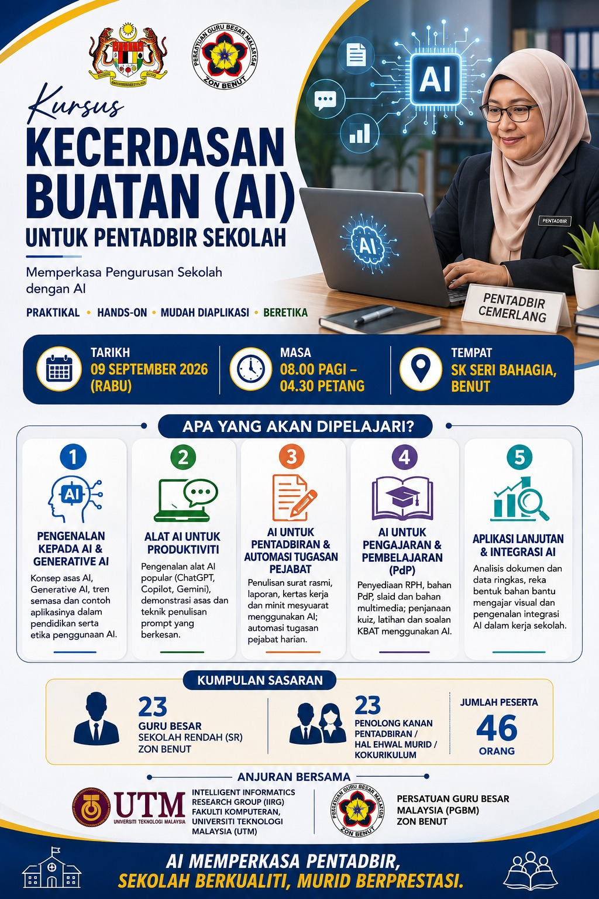

Kecerdasan Buatan untuk Pentadbir Sekolah
Memperkasa pengurusan sekolah melalui penggunaan AI yang mudah diaplikasi dalam tugasan pentadbiran, pengajaran dan analisis data.

Lima sesi, daripada asas kepada aplikasi
Setiap sesi menggabungkan penerangan ringkas, demonstrasi dan latihan yang dekat dengan tugasan sebenar pentadbir sekolah.
Pengenalan kepada AI & Generative AI
Konsep asas, aplikasi pendidikan dan penggunaan beretika.
Buka sesi → 2Alat AI untuk Produktiviti
ChatGPT, Copilot, Gemini dan teknik menulis prompt.
Buka sesi → 3Pentadbiran & Automasi Pejabat
Surat, laporan, minit mesyuarat dan pelan tindakan.
Buka sesi → 4AI untuk Pengajaran & Pembelajaran
RPH, soalan KBAT, bahan multimedia dan rubrik.
Buka sesi → 5Aplikasi Lanjutan & Integrasi AI
Analisis dokumen, data, carta dan aliran kerja AI.
Buka sesi →Bahan yang boleh terus digunakan
Prompt sedia salin
Templat prompt untuk surat, laporan, mesyuarat, PdP dan analisis data.
Terokai library →Latihan berpandu
Arahan langkah demi langkah daripada prompt mudah hingga tugasan berasaskan fail.
Lihat latihan →Pautan AI rasmi
Akses alat yang sesuai dengan penerangan ringkas tentang kegunaan setiap satu.
Buka AI Tools →Sedia mencuba AI dalam tugasan harian?
Pilih satu latihan, salin prompt dan semak hasil AI dengan pertimbangan profesional.